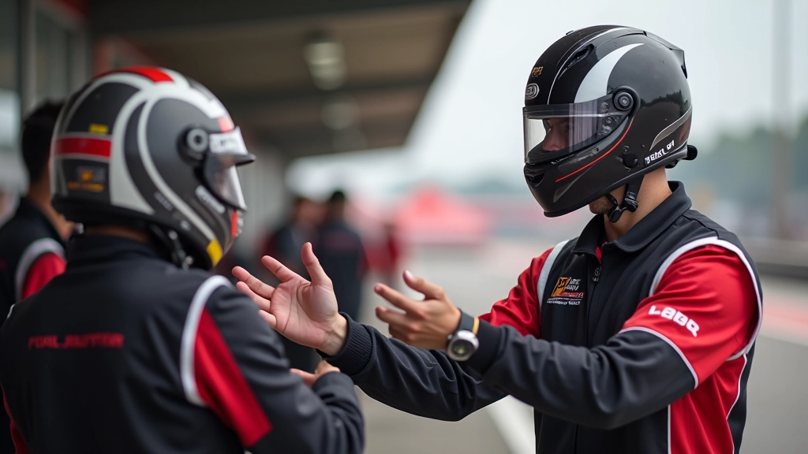
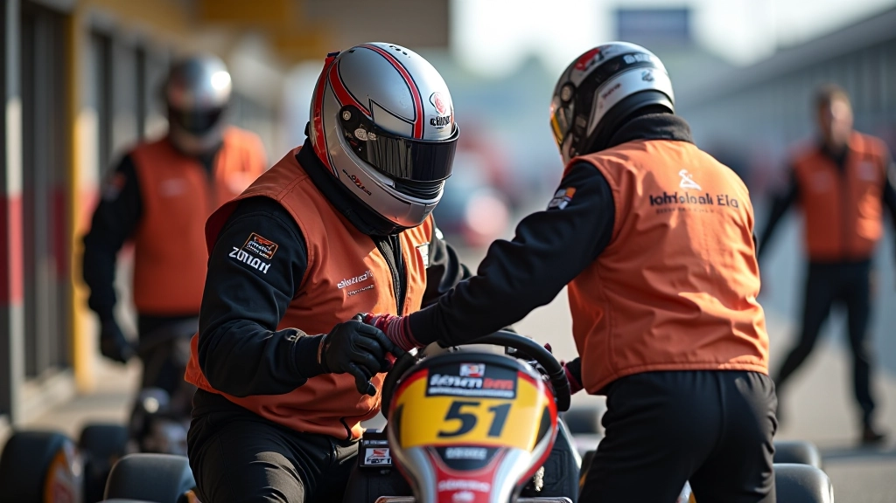

لماذا يهم التنسيق والتواصل؟
في سباقات التحمل، الفرق الثانية تحسب. الفرق الجيدة ليست فقط السريعة على المسار — هي التي تتحرك بكفاءة في منطقة التبديل. لا تحتاج إلى نظام اتصالات معقد. تحتاج إلى خطة واضحة، فهم مشترك، وتدريب على التنسيق.
التبديل السيء قد يكلفك 10-15 ثانية. في سباق 4 ساعات، هذا الفارق قد يكون الفرق بين الفوز والمركز الثاني. والأسوأ؟ معظم هذه الأخطاء يمكن تجنبها بتخطيط بسيط.
النقاط الأساسية
- نظام إشارات واضح بين الفريق والسائقين
- تخطيط التبديلات قبل السباق بساعات
- مسؤوليات محددة لكل فرد في الفريق
- ممارسة التبديلات في التدريبات
- تعديل الخطة حسب ظروف السباق الفعلية
نظام الإشارات والاتصالات
الاتصال الجيد في منطقة التبديل يبدأ برموز بسيطة يفهمها الجميع. قد تكون إشارات باليد، أو أصوات محددة، أو حتى علامات بصرية على لوح الفريق.
مثلاً: إذا رفع مدير الفريق يده بشكل معين، يعني "استعد للتبديل في 2 لفة". إذا أشار بالإصبع للأسفل، يعني "عودة فوراً للمسار". كل إشارة يجب أن تعني شيئاً واحداً فقط، ولا التباس فيها.
نحتاج أيضاً إلى طريقة لتمرير المعلومات عن حالة السيارة. السائق الجديد يحتاج لمعرفة: هل هناك مشاكل؟ ما نوع الإطارات المركبة حالياً؟ ما الأداء على المسار؟ كل هذا يجب أن يُنقل في ثوانٍ معدودة.

جدول التبديلات المخطط مسبقاً
قبل السباق بيوم واحد على الأقل، اجلس مع فريقك وخطط التبديلات. اكتب الوقت المتوقع لكل تبديل، أسماء السائقين، والترتيب بالضبط.
مثال: التبديل الأول في الساعة 11:15 صباحاً. أحمد يخرج من المسار، محمد يدخل. مدة التبديل المستهدفة: 45 ثانية. الفني يفحص الإطارات والسوائل. مدير الفريق يراقب الوقت.
هذا التخطيط يمنع الفوضى. عندما تعرف بالضبط من يجب أن يفعل ماذا، يصبح التبديل سلساً. الأخطاء تحدث عندما يكون هناك التباس أو انتظار لتعليمات. تجنب هذا بجدول مكتوب واضح.
التحديات الشائعة في التبديل
تأخير في استخراج السائق
السائق الحالي لا يعرف أنه يجب أن يخرج. السبب: الإشارة لم تصله بوضوح أو كان يركز على المسار جداً.
تأخير في دخول السائق الجديد
السائق الجديد لم يكن مستعداً أو لم يعرف متى يدخل. السيارة تنتظر بلا سائق لمدة ثوانٍ ثمينة.
نسيان المعلومات المهمة
السائق الجديد لا يعرف حالة السيارة أو الإطارات أو الوقود. يبدأ بفهم خاطئ للوضع.
اختيار وقت خاطئ
تبديل عندما تكون السيارة في منطقة بطيئة أو أثناء حادث آخر. الفوضى تزداد.
خطوات تنفيذ التبديل السليم
إعطاء الإشارة الأولى
قبل 5 دقائق من وقت التبديل المخطط، أعط السائق الحالي إشارة "استعد". يجب أن يفهم أن تبديلاً سيحدث قريباً.
إشارة الدخول إلى منطقة التبديل
عندما يقترب من منطقة التبديل، أعط إشارة واضحة "الآن". يجب أن تكون الإشارة مرئية أو مسموعة بوضوح.
استخراج السائق وتسليم المعلومات
بمجرد أن يخرج السائق من السيارة، مدير الفريق يخبره بـ 3 أشياء فقط: حالة السيارة، ما يجب فعله التالي، أي رسالة للسائق القادم.
إدخال السائق الجديد
السائق الجديد يجلس، يضع حزام الأمان، ويتجهز. أعط إشارة "جاهز" عندما يكون كل شيء صحيحاً.
إطلاق السيارة
عندما يكون الطريق واضحاً وكل شيء جاهز، أعط إشارة "اذهب". السيارة تعود للمسار.

أفضل الممارسات والنصائح
تدرب قبل السباق
في التدريبات، حاول التبديل مرتين على الأقل. لا تنتظر السباق الفعلي لتكتشف أن النظام لا يعمل. التدريب يزيل الأخطاء.
اكتب كل شيء
لا تعتمد على الذاكرة. اكتب الجدول، الإشارات، المسؤوليات. ورقة واحدة على لوح الفريق توفر الكثير من الارتباك.
راقب الوقت بدقة
استخدم ساعة توقيت دقيقة. الثانية الواحدة تحسب. إذا كنت متأخراً 2 ثانية عن الجدول، عدل بسرعة.
كن مرن
الخطة تتغير. قد يكون هناك حادث أو متغيرات طارئة. لا تتمسك بالخطة الأصلية إذا لم تعد منطقية. اتخذ قرار سريع.
الخلاصة
التنسيق والتواصل الفعال في سباقات التحمل ليسا معقدين. هما يتطلبان تخطيطاً بسيطاً، إشارات واضحة، وممارسة. الفرق التي تتقن هذا الأساس تكسب ثوانٍ في كل تبديل. على مدار 4 ساعات من السباق، هذه الثوانٍ تجتمع لتصنع فرقاً حقيقياً.
ابدأ بـ: خطة مكتوبة، نظام إشارات بسيط، وممارسة واحدة على الأقل. هذا كل ما تحتاجه. الباقي سيأتي مع الخبرة.
تنبيه معلومات: هذا الدليل مقدم لأغراض تعليمية وإعلامية فقط. الظروف والقوانين تختلف باختلاف المكان والحدث. استشر منظمي السباق والمسؤولين قبل تطبيق أي استراتيجية. الأمان والامتثال للقواعس لهما الأولوية دائماً.